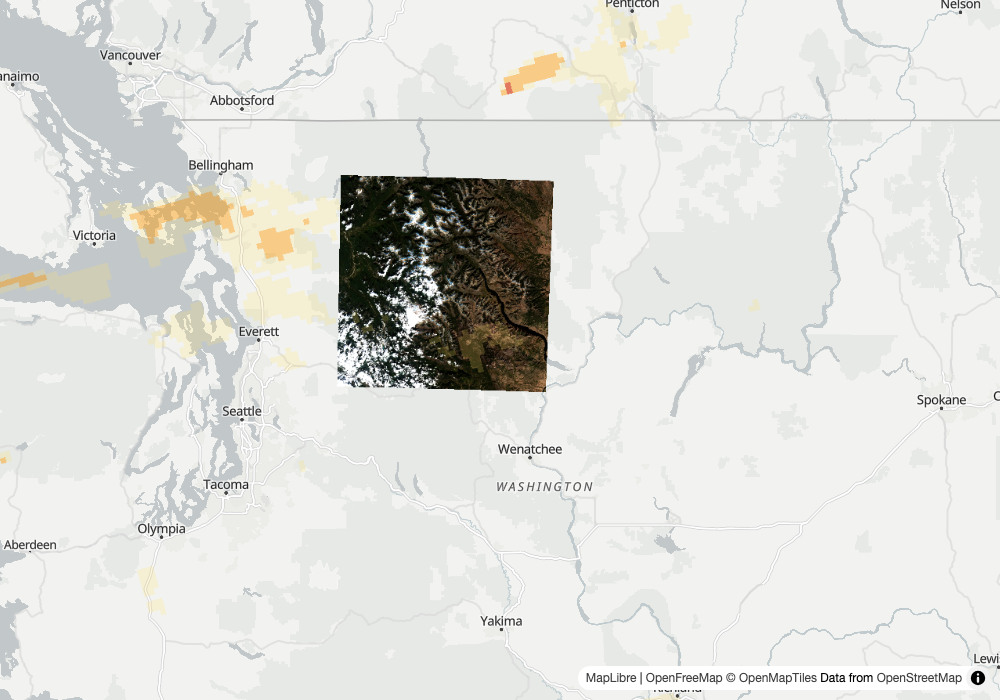

Round 1: the folded copies and the out-of-range note, Landsat unchanged, and the brief over the place with its scene check (stops 34 to 37)
1
claims on the stack
insurance catastrophe adjuster
Input
Rolling Fork, Mississippi was hit by the March 24, 2023 tornado. Show me before and after, and tell me what data this came from.
Our read
The 2023 search now returns 1 scene per tile, and the 2023 statistics say in words that their extreme values are not real vegetation.
Learning → Fixed.
full read
Our read
The 2023 search now returns 1 scene per tile, and the 2023 statistics say in words that their extreme values are not real vegetation. The search over 2023-08-18 to 08-19 comes back with 2 items, one per tile (15SYS covers 41.1% of the box, 15SXS covers 100.0%), both processed 2024-10-26, with folded_duplicates: 2 and a note that 2 older processings of the same scene were dropped. The recommendation reads "clearest (0.0% cloud) and best-covering (100.0% of the area), not a tradeoff", which is true because the pick is both. The 2023 NDVI statistics carry a range_note saying the index ran from -64 to 4.067, that pixels under digital number 1000 go below 0 after the -0.1 offset, that the values are not clamped, and that the median (0.5799) and percentiles (0.1026 and 0.9498) are the safer summary. The mean is 0.5358. The 2021 scene (offset 0, 65.04% cloud scene-wide) has min -0.5272, max 0.7693, and no range_note. Index statistics over a 14 by 11 km box, not damage evidence.show the data
search_imagery("planetary-computer", ["sentinel-2-l2a"], bbox=[-90.95, 32.86, -90.8, 32.96], datetime_range="2023-08-18T00:00:00Z/2023-08-19T23:59:59Z", limit=10)
count: 2
S2A_MSIL2A_20230818T163841_R126_T15SYS_20241026T035856 cloud 0.007472 covers_aoi_pct 41.1
S2A_MSIL2A_20230818T163841_R126_T15SXS_20241026T035856 cloud 0.014582 covers_aoi_pct 100.0
folded_duplicates: 2
note: 2 older processings of the same scene (same sensing time, tile and footprint) dropped; only the newest processing of each scene is kept
recommended: S2A_MSIL2A_20230818T163841_R126_T15SXS_20241026T035856 cloud 0.014582 covers_aoi_pct 100.0
reason: clearest (0.0% cloud) and best-covering (100.0% of the area), not a tradeoff
search_imagery("planetary-computer", ["sentinel-2-l2a"], bbox=[-90.95, 32.86, -90.8, 32.96], datetime_range="2021-10-12T00:00:00Z/2021-10-13T23:59:59Z", limit=10)
count: 2 (no folded_duplicates key)
S2B_MSIL2A_20211012T164139_R126_T15SYS_20211013T050253 cloud 42.681421 covers_aoi_pct 41.1
S2B_MSIL2A_20211012T164139_R126_T15SXS_20211013T060154 cloud 65.04476 covers_aoi_pct 100.0
recommended: S2B_MSIL2A_20211012T164139_R126_T15SXS_20211013T060154 cloud 65.04476 covers_aoi_pct 100.0
reason: every scene is over 30% cloud, so this is the least bad: 65.0% cloud but covers 100.0% of the area; the clearest scene (42.7% cloud) covers 41.1%
compute_statistics("planetary-computer", "sentinel-2-l2a", "S2A_MSIL2A_20230818T163841_R126_T15SXS_20230819T021410", expression="(B08-B04)/(B08+B04)", bbox=[-90.95, 32.86, -90.8, 32.96])
key: (B08-B04)/(B08+B04)
mean: 0.5357592447575882 median: 0.5799102519848118 std: 0.38024012773145444
min: -63.999999999998195 max: 4.066666666666659
percentile_2: 0.1026372059871704 percentile_98: 0.9497852659398744
count: 175104.0 valid_percent: 100.0
scaling_applied: true
band_scaling: 1 entry, scale 0.0001, offset -0.1, source: collection convention: the item carries no raster:bands
range_note: the index ran from -64 to 4.067, outside -1 to 1: pixels under digital number 1000 go below 0 after the -0.1 offset, so the index is undefined over them; the values are not clamped and they pull the mean, so the median and percentiles are the safer summary
compute_statistics("planetary-computer", "sentinel-2-l2a", "S2B_MSIL2A_20211012T164139_R126_T15SXS_20211013T060154", expression="(B08-B04)/(B08+B04)", bbox=[-90.95, 32.86, -90.8, 32.96])
key: (B08-B04)/(B08+B04)
mean: -0.01693815486057333 median: -0.02622974642156508 std: 0.06243147773886538
min: -0.5272072072072072 max: 0.7693144722524483
percentile_2: -0.1110584330923314 percentile_98: 0.1473065310662641
count: 175104.0 valid_percent: 100.0
scaling_applied: true
band_scaling: 1 entry, scale 0.0001, offset 0, source: collection convention: the item carries no raster:bands
(no range_note key)
Learning → Fixed. Field test 18 searched the same box and window and got 4 items (the no18 card names the one 15SXS id, ...20230819T021410, and the tile 15SYS item and the later-processed copies are not itemized there); now the search returns 2, with ids ending 20241026T035856, and says
folded_duplicates: 2. The recommendation reason no longer contrasts a scene with one it equals. For the statistics, min -63.999999999998195 and max 4.066666666666659 are unchanged from no18, but they now come with a range_note in plain words; the 2021 scene, whose offset is 0 and whose range is -0.5272 to 0.7693, has none. Two things worth saying. First, the statistics call used the older item id ...20230819T021410 so the arguments stay identical to no18; the search no longer returns that id, and the call still worked. Second, the 2021 search returned 2 items with no folding key, which fits there being no reprocessed copies (my reading; the output only shows the absence of the key). Not checked: whether the dropped copies differ in content from the kept ones, the apply_scaling=False path, and whether 0.5358 holds against an independent source.stop 34 one id per tile and date, folded_duplicates 2 with a note · reason without a self-contrast · stop 36 range_note on the offset -0.1 scene · no range_note on the offset 0 scene · min -64.0 and max 4.067 unchanged
2
which portland
harbor pilot
Input
Show me the harbor approaches at Portland from the latest Landsat pass.
Our read
Nothing on this card changed: the same 8 scenes, the same pick (2026-10-05, 15.28% cloud, 100.0% coverage), and the same reason ending with why the newest day, 2026-10-21, lost.
Learning → The same.
full read
Our read
Nothing on this card changed: the same 8 scenes, the same pick (2026-10-05, 15.28% cloud, 100.0% coverage), and the same reason ending with why the newest day, 2026-10-21, lost. The bare name "Portland" is still ambiguous (4 candidates), so I used the Casco Bay box of Portland, Maine, as the earlier cards did. The reason still ends "the newest, 2026-10-21, lost on cloud: 23.0% against the pick's 15.3%, outside the 5-point tie". Asked with limit=3 the search returns 3 scenes and picks the 2026-10-21 scene with no such clause. Neither search carries folded_duplicates or a note, so the Landsat items were not folded.show the data
geocode("Portland")
source: gazet name: Portland (United States, urban_centre) ambiguous: true
candidates (4):
Portland (United States, urban_centre) Oregon, United States score 0.099
Portland (US, locality) Oregon, United States score 0.085
Portland (US, locality) Maine, United States score 0.084
Portland (United States, urban_centre) Maine, United States score 0.057
geocode_note: 4 places match 'Portland' equally well; using Portland (Oregon, United States, urban_centre) (best score), not Portland (Oregon, United States, locality), Portland (Maine, United States, locality), Portland (Maine, United States, urban_centre). Pass the fuller name if another was meant. ambiguous: pass the fuller name or a bbox
search_imagery("planetary-computer", ["landsat-c2-l2"], bbox=[-70.40, 43.55, -69.90, 43.85], datetime_range="2026-10-01T00:00:00Z/2026-10-26T23:59:59Z", limit=10)
count: 8 (result keys: bbox, count, items, recommended; no folded_duplicates, no note)
recommended: LC09_L2SP_012030_20261005_02_T1 cloud 15.28 covers_aoi_pct 100.0
reason: 15.3% cloud but covers 100.0% of the area; the clearest scene (0.3% cloud) covers 84.2%; the newest, 2026-10-21, lost on cloud: 23.0% against the pick's 15.3%, outside the 5-point tie
LC09_L2SP_012030_20261021_02_T1 2026-10-21 cloud 23.01 covers_aoi_pct 100.0
LC09_L2SP_012029_20261021_02_T1 2026-10-21 cloud 2.63 covers_aoi_pct 66.6
LC09_L2SP_011030_20261014_02_T1 2026-10-14 cloud 53.29 covers_aoi_pct 87.0
LC08_L2SP_012030_20261013_02_T2 2026-10-13 cloud 100.0 covers_aoi_pct 100.0
LC08_L2SP_012029_20261013_02_T2 2026-10-13 cloud 100.0 covers_aoi_pct 65.6
LC08_L2SP_011030_20261006_02_T1 2026-10-06 cloud 0.33 covers_aoi_pct 84.2
LC09_L2SP_012030_20261005_02_T1 2026-10-05 cloud 15.28 covers_aoi_pct 100.0
LC09_L2SP_012029_20261005_02_T1 2026-10-05 cloud 55.59 covers_aoi_pct 67.3
search_imagery("planetary-computer", ["landsat-c2-l2"], bbox=[-70.40, 43.55, -69.90, 43.85], datetime_range="2026-10-01T00:00:00Z/2026-10-26T23:59:59Z", limit=3)
count: 3 (no folded_duplicates, no note)
recommended: LC09_L2SP_012030_20261021_02_T1 cloud 23.01 covers_aoi_pct 100.0
reason: 23.0% cloud but covers 100.0% of the area; the clearest scene (2.6% cloud) covers 66.6%
LC09_L2SP_012030_20261021_02_T1 2026-10-21 cloud 23.01 covers_aoi_pct 100.0
LC09_L2SP_012029_20261021_02_T1 2026-10-21 cloud 2.63 covers_aoi_pct 66.6
LC09_L2SP_011030_20261014_02_T1 2026-10-14 cloud 53.29 covers_aoi_pct 87.0
Learning → The same. That is the expected result here, not a gap: stop 34 folds reprocessed copies of one scene, and this Landsat window holds none, so nothing should change, and nothing did. Count (8 and 3), ids, cloud and coverage figures, the geocode ambiguity note and both reason texts match field test 18 character for character as I read them. The stop 32 newest-scene clause still holds, and is still absent when the pick is the newest day. What this card cannot say: whether the fold would fire on Landsat when duplicates exist (my reading from the brief for this run: Landsat items carry no s2:mgrs_tile, so folding there depends on grid:code, but the output does not show that), and the ceiling-step and coverage-step wordings, which no live data here reaches. Not checked: a render of the pick.
stop 34 does not disturb a non-Sentinel collection · no folded_duplicates on Landsat · count 8 and 3, pick and reason as in no18 · stop 32 newest-scene clause still reads as before · geocode ambiguity still lists 4 Portlands
3
the product
Earth briefs you
Input
brief.py --place "Chelan County, Washington" --days 7
Our read
The brief now measures NDVI over the county box, says how much of the county that covers, and says out loud that it cannot tell whether the scenes moved since the last run.
Learning → Fixed.

map: Chelan County brief, S2C_10UFU_20261023_0_L2A ↗full read
Our read
The brief now measures NDVI over the county box, says how much of the county that covers, and says out loud that it cannot tell whether the scenes moved since the last run. The pick is the same scene as field test 18, S2C_10UFU_20261023_0_L2A (cloud 8.8687, 47.6% of the area), and the baseline is the same, S2C_10UFU_20261003_0_L2A. The means are now 0.499 and 0.525, not the whole-tile 0.544 and 0.614 of field test 18, and the metric label reads "NDVI (vegetation) over Chelan County, Washington, 47.6% of it covered". The change is a drop of 0.026 (-4.9%), against -0.07 (-11.5%) before. The brief carries "Since the last run: ..." under What changed and does not say "nothing has changed". The state file now holds both scene ids for the next run.show the data
brief.py --place "Chelan County, Washington" --days 7 --out docs/img/ft19-chelan
Ran through harbor-cli run --light, at 0.59.0, once, exit 0. All 5 steps ran, including the Claude synthesis. The state file held only the 2026-10-26 mean (0.544), no scene ids.
data.json ndvi_change.metric: NDVI (vegetation) over Chelan County, Washington, 47.6% of it covered
current: S2C_10UFU_20261023_0_L2A, 2026-10-23, cloud 8.8687, covers_aoi_pct 47.6, mean 0.499
baseline: S2C_10UFU_20261003_0_L2A, 2026-10-03, cloud 0.004074, covers_aoi_pct 47.6, mean 0.525
delta: -0.026, delta_pct: -4.9, caveats: []
data.json previous_run.scene_vs_last_run: "the prior run carried no scene ids, so whether the pick or baseline moved is unknown"
data.json previous_run.ndvi_mean: 0.544
brief md, under "## What changed": "Since the last run: the prior run carried no scene ids, so whether the pick or baseline moved is unknown."
brief md, vegetation bullet: "The previous run recorded a mean NDVI of 0.544, against 0.499 now. The prior run carried no scene ids, so whether the scene pick or baseline moved is unknown. Treat that gap as unexplained until the scenes are compared directly."
brief md, first line: "NDVI over the 47.6% of the county covered by tile 10UFU fell from 0.525 (2026-10-03) to 0.499 (2026-10-23), a drop of 0.026 (-4.9%), with no caveats listed."
occurrences of "nothing has changed" in the brief md (case-insensitive): 0
state file briefing/state/chelan-county--washington.json after the run: pick_id S2C_10UFU_20261023_0_L2A, baseline_id S2C_10UFU_20261003_0_L2A, ndvi_mean 0.499, date 2026-10-26
files: brief-chelan-county--washington-2026-10-26.{md,html,data.json}, brief-map-chelan-county--washington-2026-10-26.html
Learning → Fixed. Stop 35: the label names the place and the covered share (47.6%), and both means moved from the whole tile (0.544 and 0.614 in field test 18) to the place's box (0.499 and 0.525), matching the 0.499 and 0.525 the in-process re-run on 0.57.0 gave for these 2 scenes; the scenes did not change although the window moved a day. Stop 37: the stored state from 2026-10-26 had only the mean, and previous_run.scene_vs_last_run reads "the prior run carried no scene ids, so whether the pick or baseline moved is unknown", which is the honest answer, and the brief text repeats it instead of the earlier habit of saying nothing changed (that phrase is absent; field test 18's stored tldr, kept in previous_run, still contains "Nothing has changed since the 2026-10-25 CALM run"). Not checked: the other branch, a prior run that did carry scene ids and either matched or moved (this run could only exercise the no-ids branch; the next run on this place will carry pick_id and baseline_id for it), the share label when the pick covers 99% or more of the place, and the map image, which the render script took of the brief map without my looking at it.
stop 35 label with the covered share · means over the place's box (0.499 and 0.525) · stop 37 scene_vs_last_run reads unknown when the prior run had no ids · Since the last run line under What changed · no claim that nothing has changed · pick_id and baseline_id stored
Reproduce
git clone https://github.com/dannybauman/groundstation && cd groundstation
bash scripts/doctor.sh # walks the setup chain, prints the fix
uv run evals/unit_checks.py # 209 offline checks
uv run scripts/field_test.py docs/field-test-2026-10-27-no19.cases.json